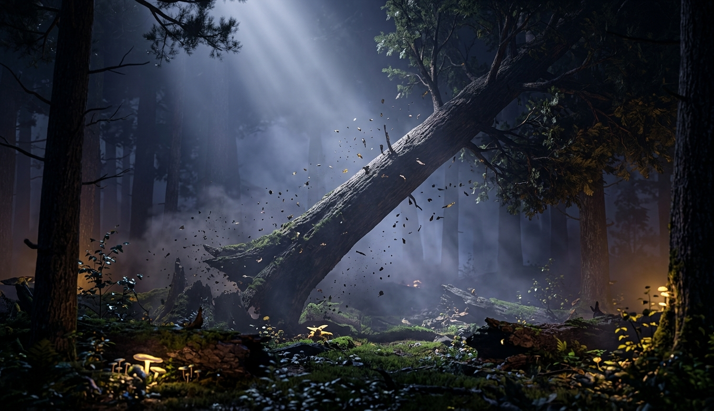
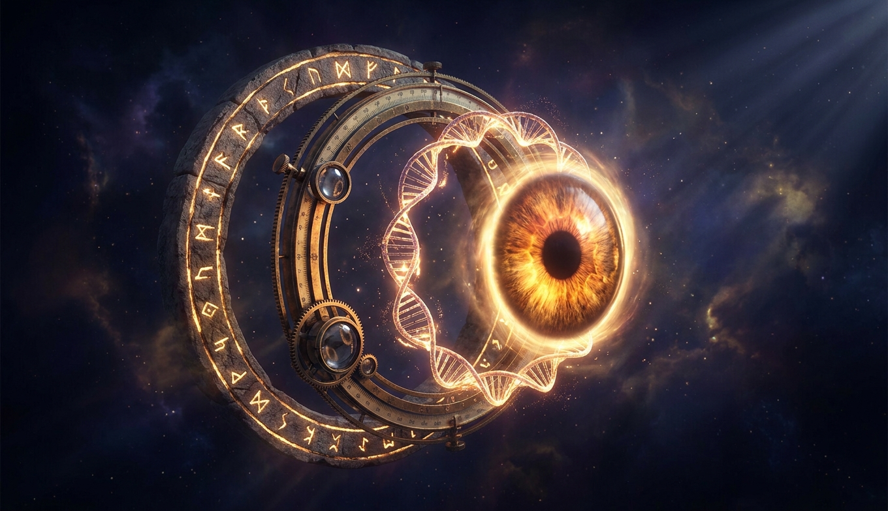
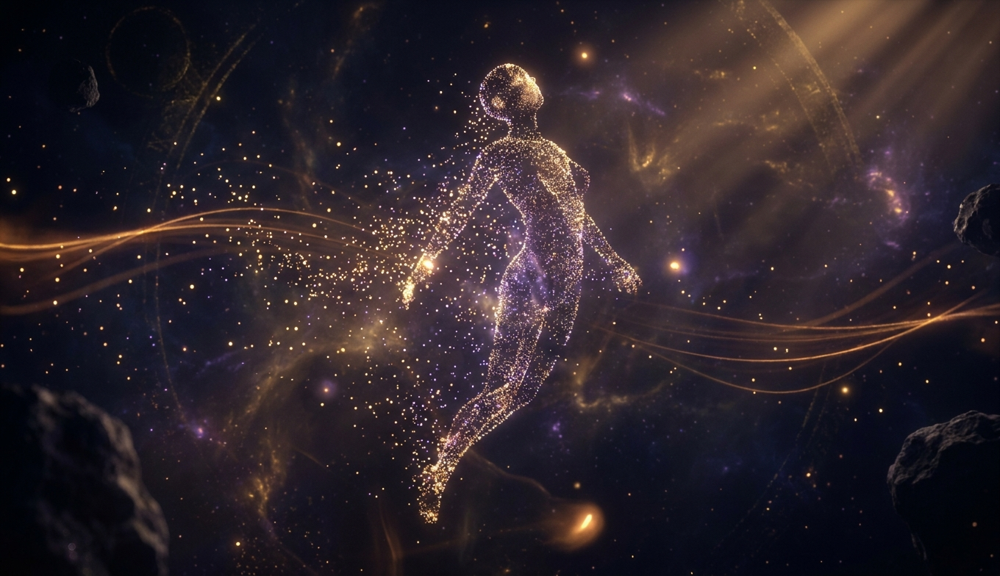
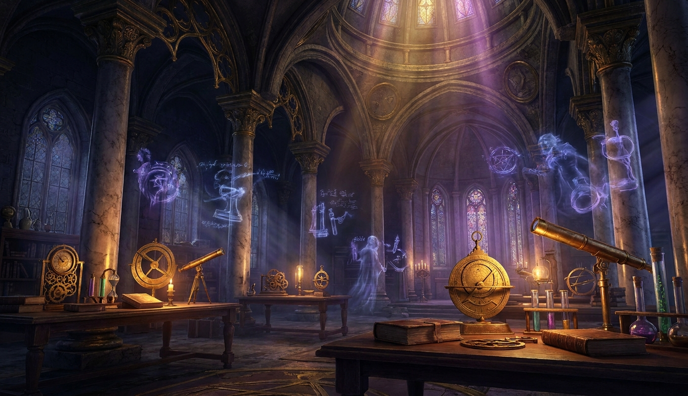
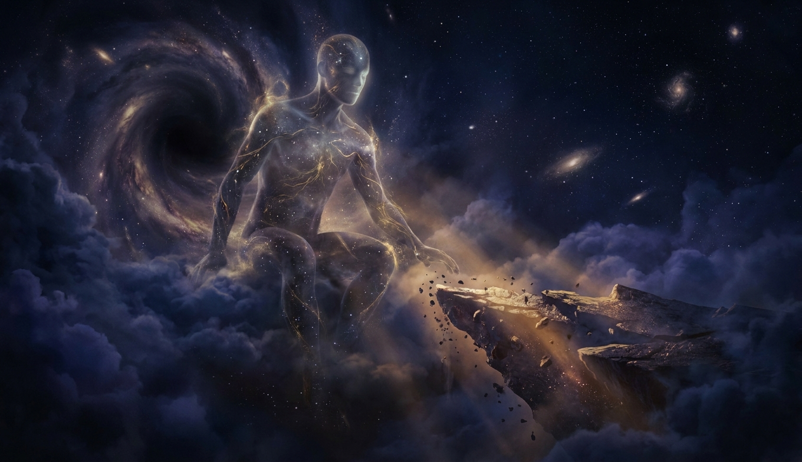
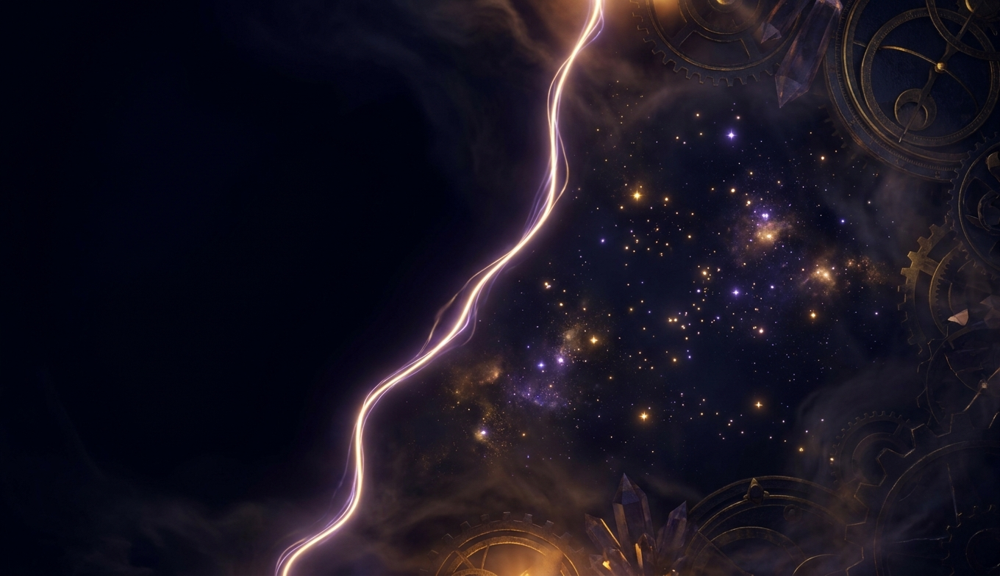
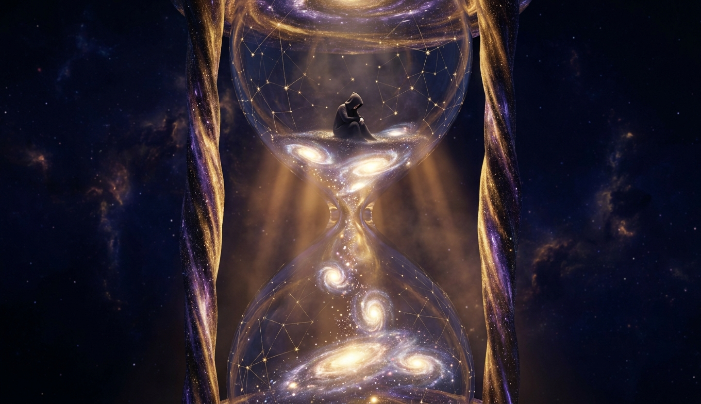
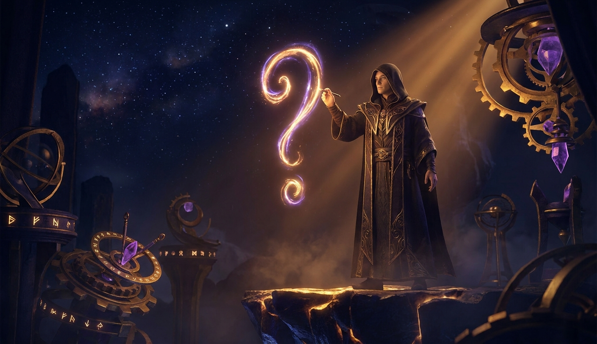

Дерево упало в лесу, где никого нет. Физика говорит «было», память говорит «не было», ты говоришь «не узнаю». Три ответа на один вопрос, и все три правильные, потому что у «не было» есть скрытое «для кого».

Камень, прибор, ДНК и ты. Четыре уровня того, что можно назвать «смотреть», и на каком-то из них появляется «кто». Физики говорят «на первом», философы «на четвёртом», и это самый старый нерешённый спор из всех, что есть в деке.
Свеча между двумя зеркалами, отражающими темноту. Единственный случай, когда «не было» относится к тому, кто спрашивал. Спор о том, одинаковы ли две темноты, идёт 2300 лет, и у серии есть свой ответ.

Мы - правильно склеенный материал. Умирая, никуда не уходим: материал остаётся и меняет форму. Если мир бесконечен, шанс, что он снова склеится так же, умноженный на бесконечность, даёт единицу. Ницше говорил это как проклятие. Здесь - как расчёт, с двумя дырками и одним следствием, которое сильнее самого вброса.

В зале науки призраки ушедших теорий проходят между колоннами, а латунные приборы на столах стоят как стояли. Мы весь выпуск ссылаемся на физику. Пора спросить, что она охватывает, где права и что вообще знает.

Тот, кто мог бы видеть всё, если бы был. Слово «потенциальный» делает его честным: мы не утверждаем, что он есть. Мы спрашиваем, что меняется, если допустить, и что остаётся, если нет.

Слово, которое отрицает всё время сразу, и у него есть дата рождения. Если «никогда» когда-то случилось, то это уже не «никогда», а «с тех пор». А у «с тех пор» есть «до тех пор».

Песочные часы из галактик, и человек в верхней колбе. «Навсегда» - это длительность, а у длительности есть конец. Три удара бесконечности, два выживших и дверь, которая открывается не рукой, а грамматикой.

Мы искали, кто смотрит, и нашли, что вопрос задаёт тот, кого ищем. «Не было» - адрес, «никогда» - дата, «навсегда» - срок, и у всех трёх один получатель. Это не тупик. Это единственное подлежащее, которое у нас есть, и оно с погрешностью в одну жизнь.